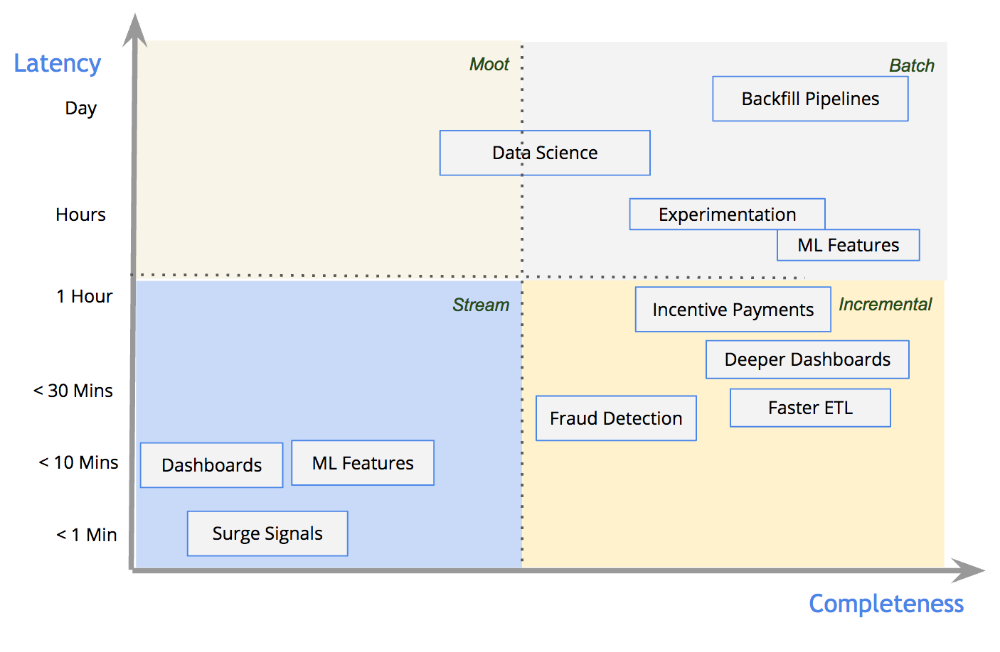

Big Data System Design, dag 1
Roelant Ossewaarde (roelant.ossewaarde@hu.nl)
4 februari 2019
1 Introductie
Deze slides horen bij de cursus Big Data System Design.
1.1 Over Big Data
Systemen waarin data zó snel groeit dat de kosten van opslag en verwerking per datapunt hoger wordt dan de waarde er van.
1.2 Visualizatie van typen data

1.3 Vijf V's
De toename van het volume van data stelt nieuwe eisen aan de manier waarop we data opslaan (storage) en aan de manier waarop we data opvragen (retrieval).
Tegelijkertijd is het steeds belangrijker dat de snelheid (velocity) van dataverwerking niet afneemt.
Ook de variëteit (variety) aan opgeslagen data verandert: er wordt per jaar bijna drie keer zo veel ongestructureerde data opgeslagen als gestructureerde data.
Het belang – en dus ook de waarde Value – van data in bedrijven neemt toe.
Voor sommige bedrijfsprocessen hoeft data niet per se 100% de werkelijkheid weer te geven veracity.
1.4 Cursus outline
Onderwerpen die we bespreken:
- Big Data Architectuur
- Attribute Driven Design (ADD)
- Lambda en Kappa architectuur
- Big Data Storage & Retrieval
- HDFS
- NoSQL
- Big Data Processing
- (Parallel en gedistribueerd programmeren)
- MapReduce
- Stream processing (Apache Spark & Flink)
- Big Data Analyse (Machine Learning)
- Text analyse
1.5 Programma
| Week | Dag | Lokatie | Onderwerp | Opdracht | Voorbereiding | |
|---|---|---|---|---|---|---|
| 1 | ma 4 feb | HL15-3.058 | Introductie; architectuur | |||
| 1 | vr 8 feb | HL15-2.012 | ADD | Introductie | Kazman, ch. 2 | |
| 2 | ma 11 feb | PL101-2.207 | Spark, Apache ecostructuur | |||
| 2 | vr 15 feb | HL15-2.012 | Geen les, lokaal beschikbaar | Uitwerken analysestrategie | ||
| 3 | ma 18 feb | PL101-2.207 | Data-analyse: regressie | |||
| 3 | wo 20 feb | Consultancy Young Mavericks / OSF | ||||
| 3 | vr 22 feb | HL15-2.012 | Text mining, neural networks | |||
| 4 | ma 25 feb | HL15-3.058 | Streams & Apache; HDFS | |||
| 4 | vr 1 mar | HL15-3.058 | Kwaliteit en testen | Primer on Big Data Testing | ||
| 5 | ma 4 mar | HL15-3.058 | Casus: actuele systemen | |||
| 5 | vr 8 mar | HL15-2.012 | Geen les, lokaal beschikbaar | |||
| 6 | ma 11 mar | PL101-2.207 | (PageRank, graphs, Neo4J) | |||
| 6 | vr 15 mar | HL15-2.012 | Oplevering systeem |
1.6 Toetsing
- Tentamen: over de stof op Canvas.
- Opdracht: in samenwerking met Young Mavericks (data science consultants) en Open State foundation.
- Ontwerpen en implementeren van een Big Data architectuur
- Ontwerpen en implementeren van text mining analyse
- Studiebelasting: 140 uur, 5 ECTS: ongeveer 80 uur voor opdracht.
2 Big Data systemen: maturity
Als introductie in de thema's die belangrijk zijn voor Big Data systemen, ga je aan de slag met een model waarmee je kunt beoordelen hoe goed en waardevol de master data management van een willekeurige organisatie is.
Het model dat we gebruiken is het MD3M model van Spruit en Pietzka. Het is beschreven in een artikel (Link via de bibliotheek, kopie op Canvas). In deze opdracht moet je over een systeem nadenken in de context van dit model.
2.1 Opdracht 1: beschrijven van systeem
Werk samen in groepjes van 2 of 3 studenten. Kies uit systemen waar jullie in het verleden aan hebben gewerkt (bijvoorbeeld vanuit stage) het meest volwassen systeem, en beoordeel dat systeem aan de hand van het MD3M-model zoals beschreven in appendix A van het gelinkte artikel.
Geef voor dat systeem een score van 1 (initial)-5 (optimized) op elk van de hoofdcategorieën van Fig. 1 (dus: Data Model, Data Quality, Usage & Ownership, Data Protection, Maintenance).
Baseer de score steeds op de beschrijvingen in appendix A. Iedere categorie heeft steeds meerdere beschrijvingen, dus je zult met verstand een inschatting moeten maken.
2.2 Opdracht 2: advies voor verbetering
Verplaats je nu in een rol als technisch consultant. Het management van de organizatie wil graag de score op het MD3M-model verbeteren. Geef voor elk van de hoofdcategorieën een concreet voorstel om het niveau één punt te verbeteren.
2.3 Verslaglegging
Beschrijf in een document:
- Het systeem dat je hebt geanalyseerd.
- De bevindingen, uitgewerkt per hoofdcategorie (antwoord op vraag 1).
- Het advies, uitgewerkt per hoofdcategorie (antwoord op vraag 2).
Afhankelijk van de omvang van de klas bespreken we jullie uitwerkingen klassikaal of individueel.
3 Kappa en Lambda Architectuur

3.1 Lambda architectuur

3.2 Kappa architectuur

4 Vooruitblik
Vrijdag komen consultants van de Open State Foundation en van Young Mavericks om de opdracht te introduceren.
Ter voorbereiding vraag ik jullie om hoofdstuk 2 van Cervantes & Kazman "Designing Software Architectures" te lezen. Het beschrijft een gestuctureerde manier waarop je een Big Data architectuur kunt ontwerpen. Je moet dit kunnen toepassen op casus van de opdracht.